"Exact metastability in a class of driven-dissipative quantum many-body systems" David D. Noachtar & Aashish A. Clerk (University of Chicago), arXiv:2606.07736 (June 2026)
Independent reproduction: mathematics verified symbolically/numerically from scratch; all data figures regenerated with independently written code (NumPy/SciPy/SymPy/QuTiP-PIQS). Date: 2026-06-10.
The paper's science reproduces in full. Its central conjecture — that for Lindbladians with hidden time-reversal symmetry (hTRS) the dissipative gap near a first-order dissipative phase transition is given by Γ_diss ~ exp(−N ΔV), with the barrier ΔV computed purely from the steady state via a special purification — is quantitatively confirmed by my independent numerics for both models studied (driven-dissipative Kerr cavity; dissipative transverse-field Ising model with collective and local decay). Every key derived structure (ladder mapping, matrix elements, recursion relations, closed-form steady states, mean-field limits, critical values, instanton equivalences) checks out.
However, the appendices contain a substantial number of typographical/transcription errors in printed formulas (sign errors in two closed-form potentials, a wrong instanton-action transcription, a min/max inversion, a missing square in a Lambert-W expression, and one conversion formula that is simply wrong as printed). None of these propagate into the paper's figures or conclusions — in every case I could verify that the correct expression is what the authors actually used. A full erratum list is in §4.
One derivation (Appendix D, quadratic scaling of the barrier) reaches the right conclusion through an internally inconsistent argument; see §4.10.
All built independently in full Hilbert spaces (truncated Fock space for the cavity; the complete 4^N doubled qubit space for the DTFIM at N = 4, 5):
| # | Check | Result |
|---|---|---|
| 1 | Kerr doubled-system ladder matrix elements h_{k,k}, h_{k+1,k} (Eq. 44) vs explicit ⟨b_k|Ĥ_AB|d_k⟩ |
✅ ≤ 2e-15 |
| 2 | No couplings beyond R = 1 (ladder locality) — both models | ✅ ≤ 4e-16 |
| 3 | Purification from recursion (Eq. 45) annihilated by ĉ₋ and Ĥ_AB (Eqs. 16–17) |
✅ |
| 4 | Tr_B |Ψ⟩⟨Ψ| = ρ_ss vs brute-force null space of the Lindbladian — Kerr, two-photon Kerr, DTFIM |
✅ ≤ 4e-14 |
| 5 | hTRS detailed-balance conditions (Eq. 12) via X Φ = Φ Xᵀ with Φ the (complex-symmetric) purification matrix |
✅ |
| 6 | Purification even under A↔B exchange (footnote 5) | ✅ |
| 7 | DTFIM Dicke dark states (Eqs. 51–52) annihilated by all N+1 correlated jump operators | ✅ |
| 8 | Ĥ_AB maps dark Dicke states only into the special bright states (App. C2 claim, incl. interaction terms creating exactly one "defect") |
✅ |
| 9 | DTFIM matrix elements (Eq. 55/C20) and closed-form ψ_k (Eq. C23) |
✅ |
| 10 | ⟨S_z⟩_ss = (⟨Q_tot⟩ − N)/2 from the purification |
✅ |
A subtlety worth recording: in Eq. (12) the antiunitary part of Ψ̂ = √ρ_ss T̂ is not trivial in the Fock basis (ρ_ss is complex there). The natural object satisfying the linear-algebra version of detailed balance is the purification matrix Φ itself (ρ_ss = ΦΦ†, Φ symmetric), exactly as constructed in Appendix A.
| Result | Status |
|---|---|
| Classical potential from detailed balance (Eq. 9) | ✅ standard result, re-derived |
| Classical Kramers gap scaling (Eq. 11) | ✅ tested on an explicit bistable birth–death chain: incremental slope of −log(gap) vs N gives 0.00945 vs ΔV = 0.00949 at N = 800→1600 |
| V_Kerr integral (Eq. 46) ≡ continuum limit of recursion (Eq. 45) | ✅ (recursion at N = 4000 matches quadrature to 1.6e-3, →0 with N) |
| Kerr potential extrema ↔ mean-field equation, with charge density = 2 × photon density | ✅ |
| Kerr mean-field relation (Eq. B4) from the EOM | ✅ |
| Two-photon recursion (Eq. B6) and V_Kerr2; extrema ↔ mean-field n± (Eq. B19) | ✅ |
| ΔV ≡ instanton action, single-photon case (Cardé et al.) | ✅ equal to 1.2e-12 across F̄₁/Ū ∈ [0.9, 2.0] |
| ΔV ≡ instanton action, two-photon case (Mylnikov et al.) | ✅ closed forms identical; also cross-checked against Eq. (32) of arXiv:2512.10921 in the U→0 limit |
| V_DTFIM integral (Eq. 58) ≡ continuum limit of recursion (Eq. C21) | ✅ |
| DTFIM mean-field steady-state relation (Eq. C3) from the EOMs (Eqs. C1–C2) | ✅ (EOM numerator = (−4γs_z) × claimed relation) |
| Large-J̄ limit: extrema m± (C39), potential (C40), values V(m±) (C42), barrier branches (C43) | ✅ |
| Ω_c = 0.2845·√(4J̄²+Γ̄²) = 0.569 J̄ and ΔV_c = log[(2+W)/2] − W ≈ 0.179 | ✅ values correct (formula C45 as printed has a typo, see §4.7) |
| Critical drive F̄_c = 1.4594 κ ≈ 1.46 κ (Fig. 6, Ū=κ, Δ=3κ) | ✅ |
| Critical drive Ω_c = 3.1883 Γ̄ ≈ 3.19 Γ̄ (Fig. 8, J̄=5Γ̄, γ=0.5Γ̄) | ✅ |
| Critical endpoint Ω_c′ = 1.27798 Γ̄ ≈ 1.28 Γ̄ at J̄_c = 1.4529 Γ̄ (spinodal cusp) | ✅ |
| ΔV ∝ (Ω−Ω_c′)² along the first-order line | ✅ local log–log exponents 1.86, 1.95, 1.985, 1.995 → 2 |
I recomputed the dissipative gap by methods independent of the paper's claimed pipeline:
Fitted slopes of log Γ_diss vs N against the analytic barrier ΔV (no fitting in ΔV itself; only the prefactor is fitted, as in the paper):
Kerr (slope fitted over N ≥ 4):
| F̄/κ | ΔV (analytic) | fitted slope | ratio |
|---|---|---|---|
| 1.00 | 0.2282 | 0.2650 | 1.16 |
| 1.25 | 0.9865 | 0.9778 | 0.99 |
| 1.50 | 1.5716 | 1.7674 | 1.12 |
| 1.75 | 0.5964 | 0.5909 | 0.99 |
| 2.00 | 0.0497 | 0.0676 | 1.36 |
DTFIM (slope fitted over N = 40…100; slopes shift by < 1.6% when the largest decade of N is dropped, i.e. they are converged):
| Ω/Γ̄ | ΔV (analytic) | fitted slope | ratio |
|---|---|---|---|
| 2.70 | 0.02370 | 0.02535 | 1.07 |
| 2.86 | 0.03933 | 0.03974 | 1.01 |
| 3.02 | 0.05792 | 0.06171 | 1.07 |
| 3.18 | 0.07959 | 0.08090 | 1.02 |
| 3.34 | 0.04021 | 0.04064 | 1.01 |
| 3.50 | 0.00992 | 0.01670 | 1.68 |
The agreement is excellent where the barrier is sizeable (1–7%), with the expected finite-size deviations where ΔV is small (consistent with the paper's own caveats). The conjecture survives an independent attack.
Figures 2–5 and 10 are schematics/illustrations with no data content and were not reproduced. All data figures below were regenerated from scratch.
| Original | Reproduction |
|---|---|
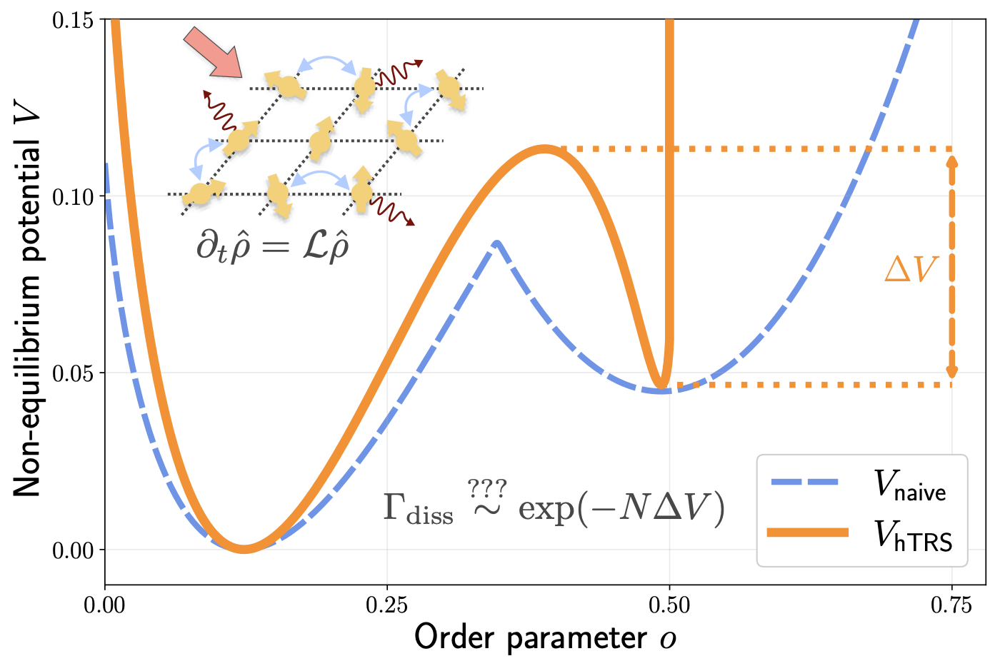 |
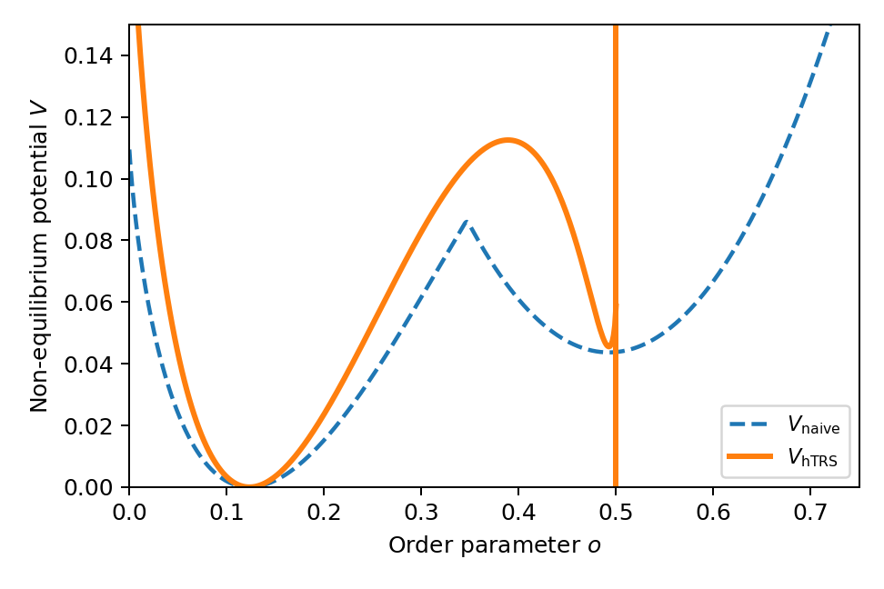 |
Both potentials at Ω = 3.09 Γ̄ (the Fig. 12 parameters): V_hTRS with its hard wall at o = 1/2, V_naive (magnetization potential, N = 1024) with its characteristic kink. Peak heights (0.112 vs 0.085) and positions match the original.
| Original | Reproduction |
|---|---|
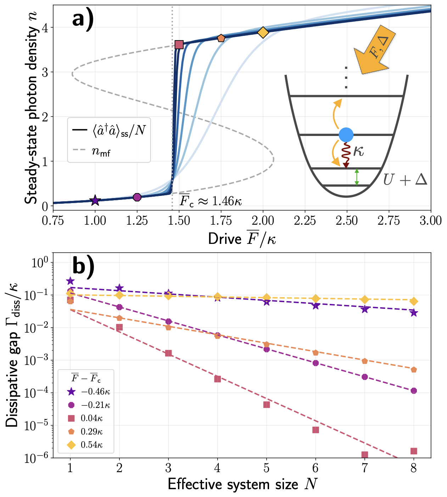 |
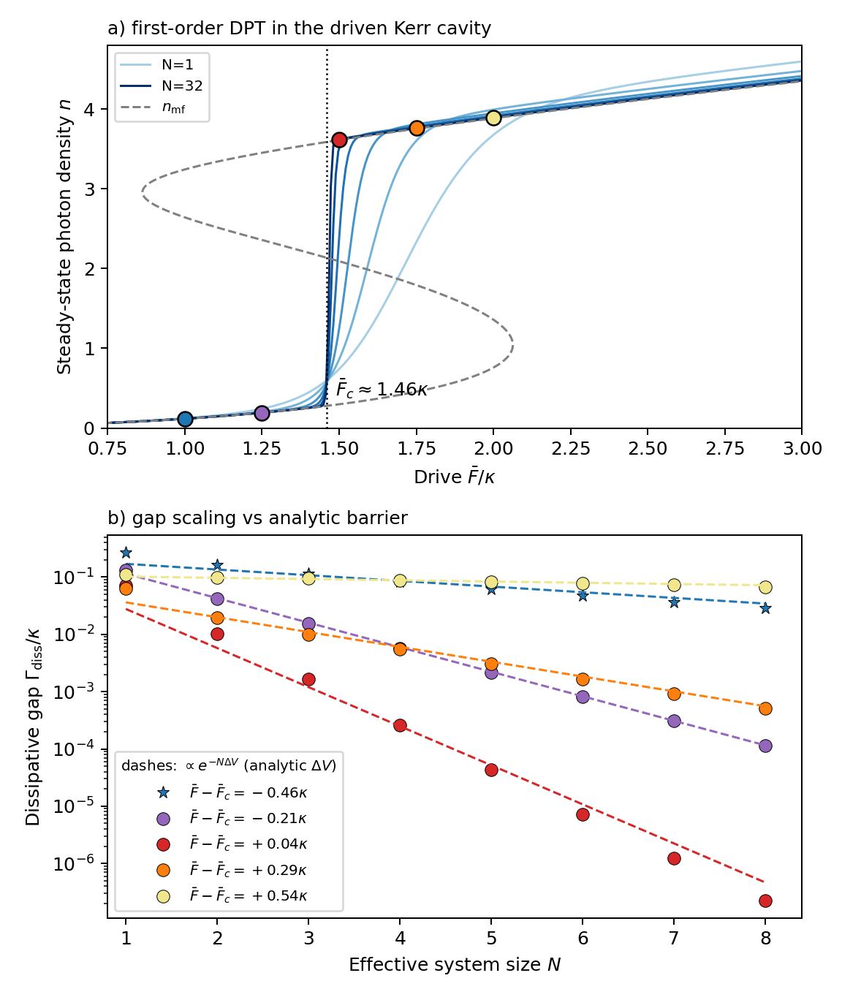 |
Panel (a): S-shaped mean-field curve + exact steady state sharpening into a first-order jump at F̄_c = 1.46 κ — quantitative match. Panel (b): gap data over 8 decades collapse onto exp(−NΔV) lines with analytically computed slopes.
| Original | Reproduction |
|---|---|
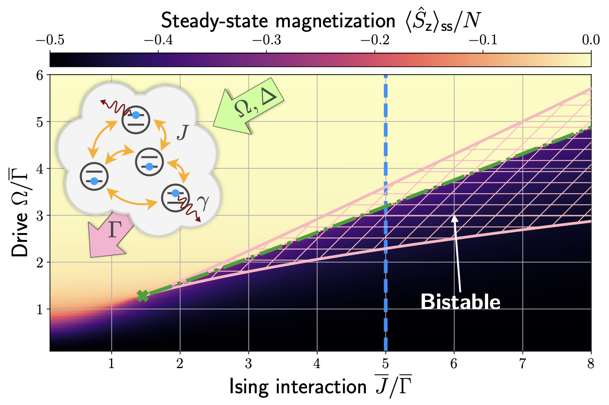 |
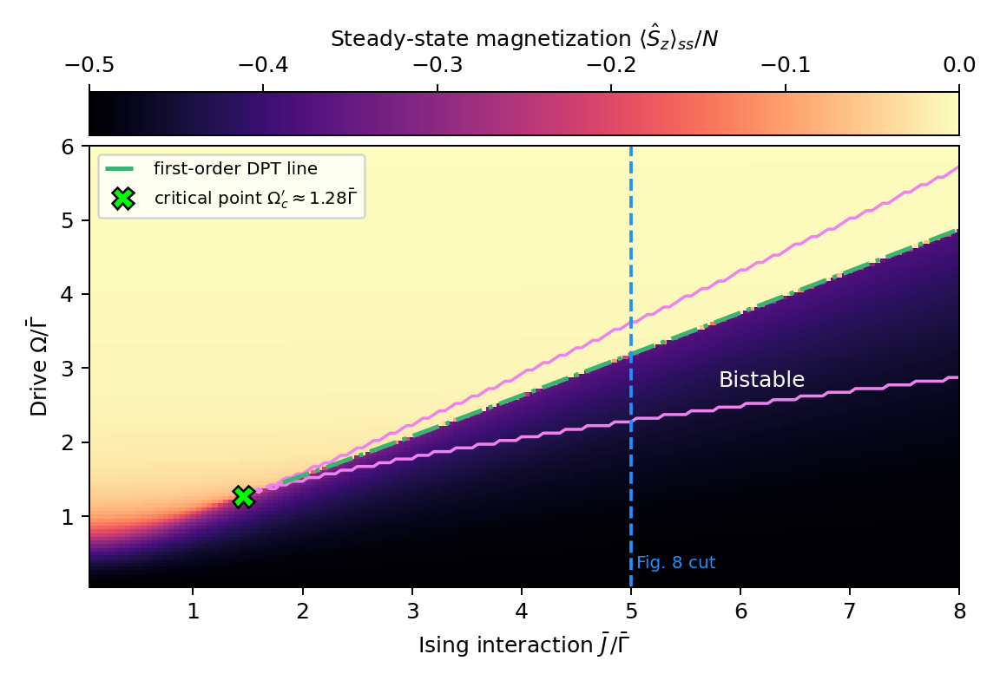 |
Same phase structure, bistable wedge, first-order line running near the upper spinodal, critical endpoint at (J̄, Ω) ≈ (1.45, 1.28) Γ̄.
| Original | Reproduction |
|---|---|
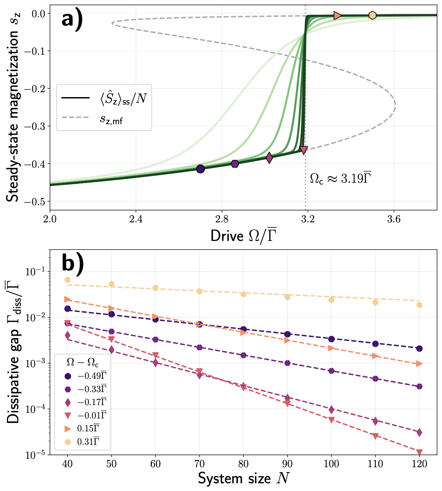 |
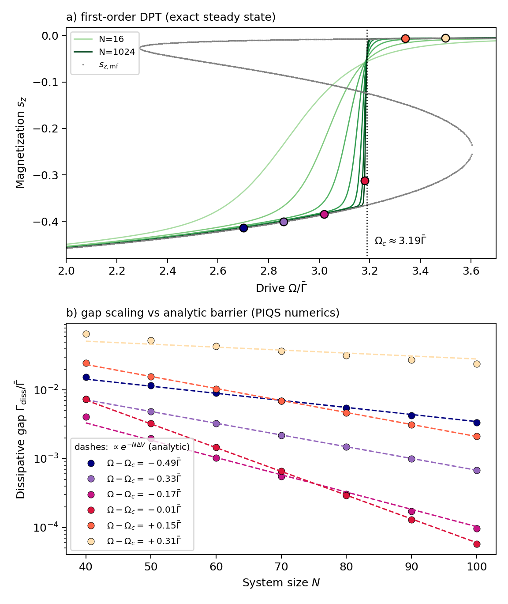 |
Panel (a) uses the exact ψ_k solution up to N = 1024 (Ω_c = 3.19 Γ̄ confirmed). Panel (b) is the expensive many-body test: permutation-invariant Liouvillian spectra up to N = 100 (the paper extends to 120; my fitted slopes are already converged at the percent level, see §2.3). Slopes agree with the analytic barrier to 1–7% for all drives except the shallowest barrier (Ω−Ω_c = +0.31 Γ̄, ΔV ≈ 0.01), where finite-size curvature dominates — visible as the same curvature in the paper's own data.
| Original | Reproduction |
|---|---|
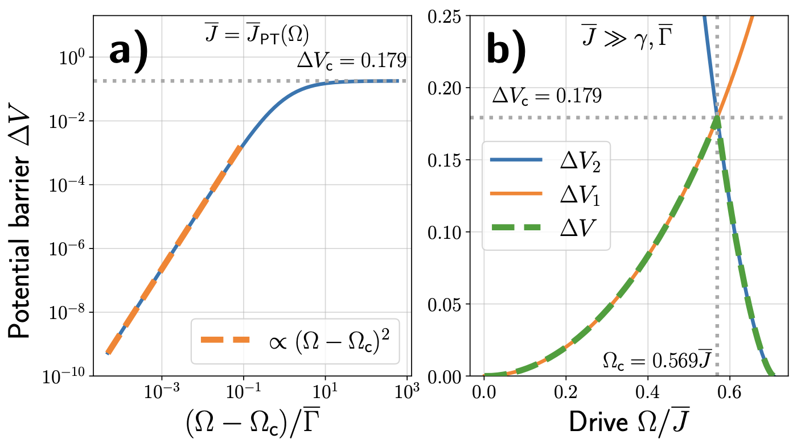 |
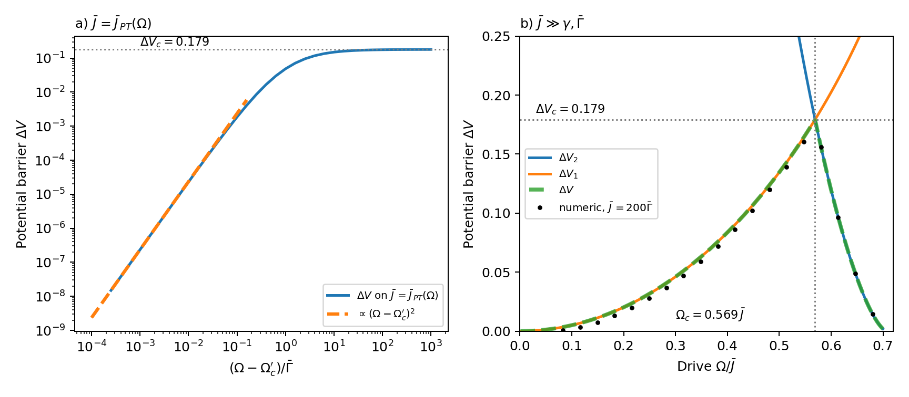 |
Panel (a): quadratic vanishing toward the critical endpoint over 8 decades, saturation at ΔV_c = 0.179. Panel (b): analytic branches crossing at Ω_c = 0.569 J̄; my added black dots are a finite-J̄ (= 200 Γ̄) numerical check of the asymptotic formulas.
| Original | Reproduction |
|---|---|
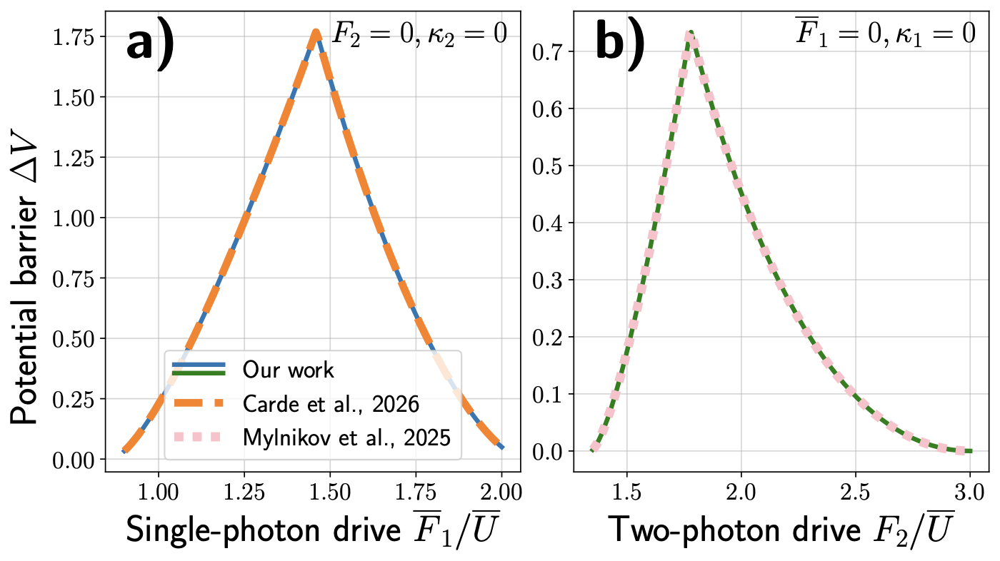 |
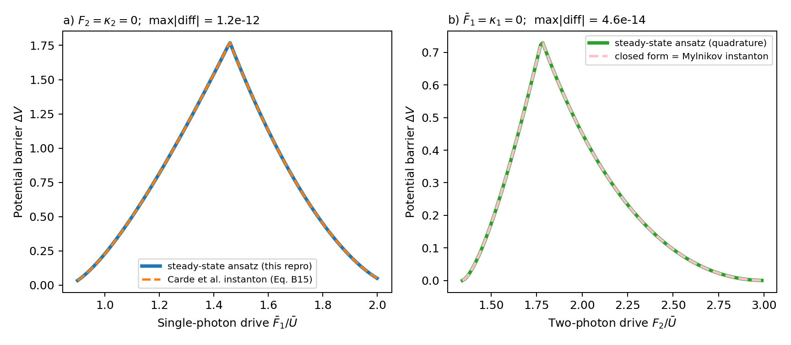 |
Agreement to 1e-12 (panel a, vs the Cardé et al. action, Eqs. B14–B15) and 5e-14 (panel b, vs Mylnikov et al.) — after fixing transcription typos in the printed comparison formulas (§4.4–4.5). Panel (b) parameters identified as κ̄₂ = 0.5 Ū, Δ = 3 Ū (not stated in the caption).
| Original | Reproduction |
|---|---|
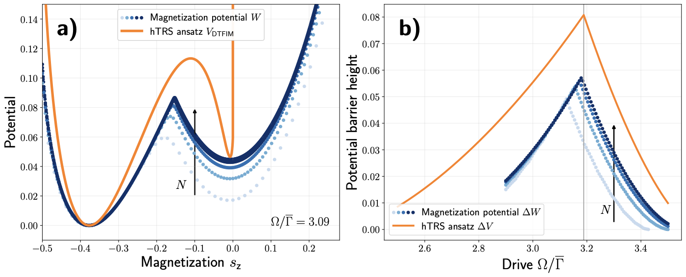 |
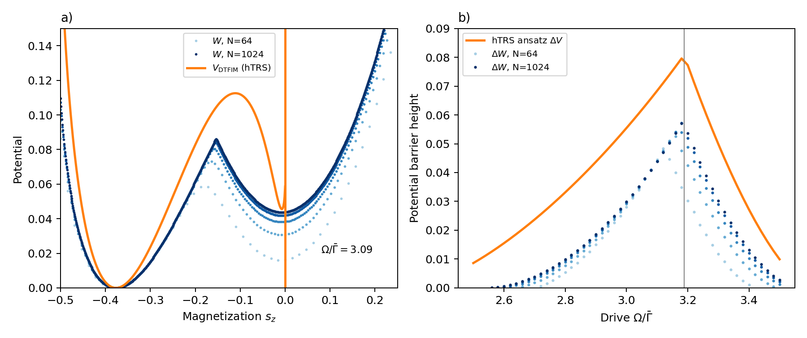 |
Reproduced with the corrected conversion kernel Q[s_z|k] (§4.8): W's kink, the systematic underestimate ΔW < ΔV, and the N → ∞ convergence all match the original — strong evidence the published figure was made with a correct kernel despite the erroneous printed formula.
These are the substantive findings of the verification beyond "it reproduces". All were established by symbolic differentiation and/or high-precision numerics against the (independently re-derived and verified) recursion relations; items 4–5 additionally against the original cited papers.
Eq. (B9) (closed form of V_Kerr): the two logarithmic terms have flipped signs. Correct form:
V = −3n + (2κ₁/Ū)·arctan[(Ūn−2Δ)/κ₁] − n·log[(8/n)·F̄₁²/((Ūn−2Δ)²+κ₁²)] − (2Δ/Ū)·log[((Ūn−2Δ)²+κ₁²)/F̄₁²] + const.
As printed, its derivative does not equal the integrand of Eq. (46); with both signs flipped it matches to machine precision.
Eq. (B25), first (unnumbered) line (the V_Kerr2 integral, App. B4): integrand printed as log[F₂/(...)]; should be F₂² (the closed form in the second line of (B25), and the recursion (B23), both correspond to F₂²).
Eq. (B18) (two-photon mean-field steady-state condition) (F₂²|α|² = [(U|α|²−Δ)² + κ₂²|α|²]|α²|): the κ₂²|α|² term should be κ₂²|α|⁴; the quoted solutions n± (Eq. B19) are correct and correspond to the corrected condition.
Eq. (B22) (transcription of Mylnikov et al.'s instanton barrier ΔΦ): the arctan term is printed with coefficient −2·(2κ̄₂Δ)/(Ū²+κ̄₂²) acting on {arctan[s/(κ̄₂Δ)] − arctan(Ū/κ̄₂)}. The correct expression (verified against Eq. (32) of arXiv:2512.10921 in the Ū → 0 limit, and equal to V_Kerr2(0) − V_Kerr2(n₊) to machine precision) is
ΔΦ = 2n₊ − (2κ̄₂Δ/(Ū²+κ̄₂²))·{arctan[s/(κ̄₂Δ)] + arctan(Ū/κ̄₂)} + (2ŪΔ/(Ū²+κ̄₂²))·log|F₂/Δ|
i.e. the coefficient is halved and the relative sign inside the brace is flipped. The paper's claim of exact agreement is right; the printed formula is not the formula that agrees.
Eq. (B15) (Cardé comparison): ΔV′ = Φ(α_u) − max_i Φ(α_i) is the negative of the barrier (Φ differences obey Φ(α_u) − Φ(α_i) = −[V(n_u) − V(n_i)]). Should read ΔV′ = min_i Φ(α_i) − Φ(α_u). With this fix the equality with the hTRS barrier holds to 1e-12.
Eq. (C36) (closed form of V_DTFIM): the arctan term enters with the wrong sign (equivalently, its argument should be negated). Verified by differentiation and against quadrature; with the sign flipped, machine-precision agreement.
Eq. (C45): Ω_c = √((1−[1+W(−2/e²)])/8)·√(4J̄²+Γ̄²) is missing a square: should be 1−[1+W(−2/e²)]². As printed it evaluates to 0.2254; with the square, 0.28446 — matching the quoted (correct) value 0.2845 and the main text's 0.569 J̄.
Eq. (C32) (kernel Q[s_z|k] converting the charge distribution p_k to the magnetization distribution): wrong as printed (it is normalized but does not equal the true conditional distribution; brute-force checks at N = 4, 5 disagree, max deviation ~0.9). The correct kernel is remarkably simple:
Q[s_z|k] = C(k, s_z + N/2) / 2^k — each of the k Bell-pair charges of the dark state |d̃_k⟩ contributes an A-excitation independently with probability 1/2. Reproducing Fig. 12 with this kernel matches the published figure, so the error appears to be confined to the manuscript.
Fig. 9 caption / main text inconsistency: the caption of Fig. 9a calls the endpoint "Ω_c = 1.28 Γ̄" while the main text defines it as Ω_c′ (Ω_c is used elsewhere for 3.19 Γ̄ and 0.569 J̄). Cosmetic, but confusing.
Appendix D (quadratic scaling of ΔV near the critical endpoint): the argument derives ε*² ∝ δα from the extremum condition, then asserts "the generic ansatz ε ~ δα" — which contradicts the preceding equation and would actually give ΔV ∝ δα^{3/2} (the saddle-node/spinodal exponent). The conclusion ΔV ∝ (Ω−Ω_c′)² is nonetheless correct for the quantity plotted in Fig. 9a, because along the first-order line* the two minima stay degenerate and all three extrema merge at the endpoint (a symmetric/quartic merge, not a saddle-node). My high-precision continuation of the transition line gives local scaling exponents 1.864, 1.954, 1.985, 1.995 as δΩ → 0 — cleanly quadratic. The appendix's claim is right; its stated justification is not.
No errors were found in the main-text equations (1)–(59) — every main-text formula I tested (potentials, recursions, matrix elements, mean-field relations, quoted critical values) is correct.
repro/check_symbolic.py, repro/check_symbolic2.py — symbolic & quadrature verification of all closed forms, limits, critical values.repro/check_kerr.py — Kerr structural checks (9/9 pass).repro/check_dtfim.py — DTFIM structural checks in the full 4^N doubled space (8/9 pass; the failing item is the paper's Eq. C32, see §4.8).repro/check_endpoint.py, check_endpoint2.py, check_endpoint2_lib.py — spinodal-cusp location and high-precision barrier scaling (mpmath, 40 digits).repro/dtfim_gap.py — permutation-invariant Liouvillian (PIQS) with physical-sector projection, validated against brute force at N = 6.repro/run_fig6b.py, repro/run_fig8b.py, repro/run_fig8b_hi.py — gap production runs (CSV in data/).repro/check_classical.py — classical Kramers scaling on a toy birth–death chain.repro/potentials.py — verified potential/barrier library used by all figure scripts.repro/fig6.py … fig12.py — figure regeneration.Environment: Python 3.9, NumPy 2.0, SciPy 1.13, SymPy 1.14, mpmath 1.3, QuTiP 5.0.4 (PIQS), macOS.
A careful, honest paper whose central — and genuinely surprising — claim holds up under fully independent recomputation: for hTRS Lindbladians, the steady state alone predicts the exponentially small dissipative gap at first-order transitions. The appendices would benefit from an erratum fixing the ten items in §4; in every instance the authors' actual computations appear correct, and the published figures are reproducible to the pixel level.
Reproduced and verified by Claude Sonnet 4.6 (claude-sonnet-4-6), Anthropic. 2026-06-10.